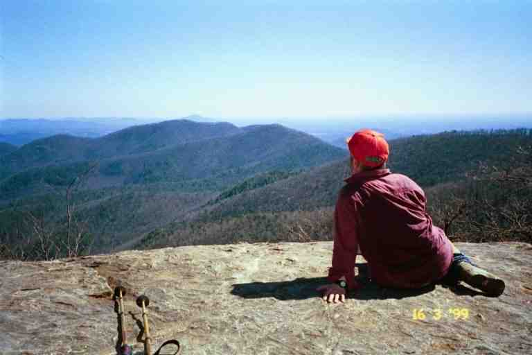
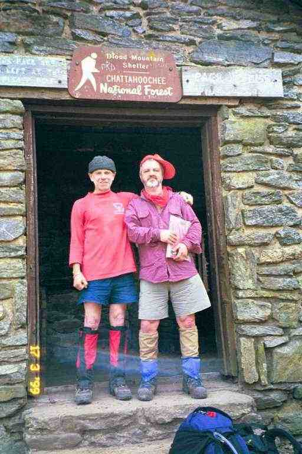

We had planned to get in shape for our hike by cross-country skiing all winter, since it is our favourite sport and it is a great workout. However. the weather did not cooperate. Most snow storms changed to rain so we only managed 4 days of skiing, compared to the 1000 kilometres we skied the previous year. We played some tennis, swam and worked out a little, but we really were not in great shape before starting. One of the opinions we had read was that the best way to get in shape for the trail was to actually hike the trail. Be patient and take your time at the beginning and the trail will get you in shape. It was suggested that hikers take about three weeks to do the first 160 miles in order to get in shape and that it would then take another three weeks to get in top hiking form.
The Appalachian trail (AT) gets its name from the mountain chain that it follows up the east coast of the US from Georgia to Maine. For the most part, it is a footpath in the mountains. The purpose of the builders seems to have been to get you to the top of the mountains. The Appalachian mountains are an old chain so that the top of the mountains is often flat. When you get to the top, the path often follows the ridge line and you may be able to walk along a chain of mountains from summit to summit without going all the way down. However the descents and ascents can be 1000 feet or more. The low points between these summits along the chains are called gaps. In the south all the mountains and all the gaps have names. There also may be times when you climb one mountain, and then go down the other side so that you can climb another mountain and repeat the process. In other words, a typical day on the trail involves walking up and down many hills and mountains.
This was the environment we were in on the second day when I had been brought back to life by peanut butter. We were walking a slow pace and were taking breaks every hour or so for rest and snacks. We had left Hawk Mountain shelter at 10:15 in the morning and thought we could perhaps make it to the next shelter at Gooch Gap before night fall, a distance of only 8.5 miles. By mid afternoon, the trail was taking its toll on us. The elevation at Hawk Mountain was 3200 feet and we had dropped as low as 2700 feet at Horse Gap and then had climbed to 3500 feet on Justus Mountain. From there the path wound its way down the mountain for a mile and a half where it came out of the woods onto an abandoned road at the 2500 foot level. Paralleling the road was a stream (Justus Creek) and to the left was a little bridge where another old road crossed the stream. The AT proceeded across the bridge.
At this spot there was an ideal place for camping, just slightly below the road, between the road and the stream. As it was 3:30 and we were both tired, we decided to stop even though we had only covered 6 miles. There were already a few hikers here including Mike (BADGER), STICK, Troy and a young couple from Florida (his name was Jeremy). The couple had their tent and fly and some clothing hung out in the sun over some low trees to dry. We decided to do the same. The area was dry, covered with dead leaves, and relatively flat. We socialized and set up camp and then I went to filter water. Later the Florida couple packed their packs and headed out. They said they wanted to go a little further before dark and there was another campsite not too far away. We figured they likely wanted some privacy. Then FAL came out of the woods onto the road, followed quite some time later by HERCULES. They surveyed the area and decided to cross the bridge and set up camp directly across the stream from us.
Because it was March, the sun goes down early, and even earlier in the gaps. It got cool very quickly and Mike told us that he heard we were in for another very cold night. He gave broad hints about how nice a fire would be, but nobody seemed interested. After supper and cleaning up, we went to bed, and went quickly to sleep.
I awoke in the middle of the night in a sweat. I was soaked and hot and extremely uncomfortable.. I likely had not recovered from my earlier "illness". My body was very warm to the touch. Fever, maybe pneumonia, I thought. We did not have any antibiotics (curse that doctor who would not prescribe antibiotics before we left home) and we were still miles from civilisation. Panic started to set in. Ma woke up (maybe I woke her up) and asked what was the matter. She said that it was not too cold and that I was bundled up too warmly. To help you understand how bundled up I was, I have included information about sleeping bags, and ours in particular, at the end of this instalment.
We both got out to relieve ourselves in the woods and I noticed that it certainly was not as cold as Mike had suggested. Back in the tent I took off my fleece jacket and loosened the top of the sleeping bag. I slept very well the rest of the night.
We broke camp earlier the next morning (8 a.m.). That morning we came to USFS road 42 at Gooch Gap and were surprised to find a couple of military trucks parked at the road. We had a little trouble finding the trail on the other side of the road because the trucks were blocking the entrance. We were a little nervous about the possibility of meeting armed men in the woods.. We later too picture at Big Cedar mountain.

Around noon we came to our first highway crossing, Georgia 60, where we had lunch at a picnic area. We were joined by a young southerner named Josh (who later became known as SPEEDY for obvious reasons). He told us how much he loved sweet tea and thought I was joking when I asked what that was. As he explained, and as we later found out for ourselves, most restaurants in the south brew fresh tea to make iced tea, and they keep two batches on hand, one of which is sweetened and called sweet tea. We came to really enjoy sweet tea.
We were then joined by BADGER and STICK. After a short time, the two young people took off and we followed a short time later with STICK who was in his mid 50's. We walked and talked together the rest of the afternoon. He was from South Carolina. He complained about the weight of his pack which was over 58 pounds. It included items that well meaning family members had given him for his trip and that he had not dared leave behind for fear of hurting their feelings.. I remember him showing me a large bulky first aid kit that he had received from his brother-in-law. He thought he would be able to walk a lot faster if he mailed some things home when he got to the outfitter at Neels Gap, likely the next afternoon.
Late in the afternoon, Ma tripped and fell and cut open her leg. This was the first chance to use the first aid kit we had packed. We cleaned the wound and then I applied an iodine solution from a squeeze bottle with a dauber on top. The iodine made a mess and the bottle started to leak from that moment on. Within the next few weeks, it became one of the items we got rid of in an attempt to shed pack weight
Another day of typical mountain terrain. We started at 3000 feet, had many climbs and descents and then climbed to the summit of Blood Mountain at 4500 before descending to 3100 at Neels Gap. The climb up Blood Mountain was the steepest so far and was very rocky. On top of the mountain sits Blood Mountain shelter. It is an enclosed stone building sitting on top of an exposed rocky summit. This is undoubtedly a cold place to be during a winter storm. There had been a fireplace inside, but it was bricked over, and signs had been erected around the area prohibiting the gathering of firewood. It appears that over the years the mountain top had been stripped of wood by cold hikers.
There were a few day hikers and some older tourist type people admiring the view from the rock outcropping behind the shelter. They had climbed up by a side trail that connects to a local road. There was also a clean shaven lightly dressed individual in his early forties who was taking pictures of the people and the views. He looked very professional and someone asked him if he worked for a magazine. He said he worked for Time Magazine. It turns out that he was a thru-hiker named Dave Moore. It was hard to believe. He was clean shaven and his clothes were clean, neat and unwrinkled. He was much faster than us but we would see him a few more times in the next week before he put some big miles between us. He eventually got the name SHAVING DAVE and we saw in a trail log during the summer that he became UNSHAVEN DAVE. More about Dave later..Attached is a picture of STICK and PA taken at the shelter..

We finally arrived at Neels Gap at 1:45. It had taken less than 6 hours to hike the 8 miles. In the next chapter, you will meet some really interesting people and have a look at shelter life.
We decided on down bags with a waterproof outer layer at the foot (called Dry Foot). This would protect the foot of the bag, in case we slid down during sleep and had our feet touch damp tent walls. We could have had a waterproof outer layer for the entire bag but this would not breathe. In addition to stopping moisture from getting in, it would trap perspiration inside. To protect our sleeping bags, we put plastic bags inside the bags' stuff sacs in order to keep the sleeping bags dry while walking. We bought Mummy style bags that taper towards the foot. This means that there is less air inside the bag for the body to warm up and also you don't end up sticking your warm feet into cold corners during the night. It also decreases the size and weight of the bag. However mummy bags are very restrictive: when you roll over you roll with the entire bag rather than within it.
The reason I had been so warm is I had taken all the necessary precautions for cold weather. I had pulled the cords of the bag's hood tight so that only a portion of my face was exposed to the air. The bag has a 15F rating and is equipped with a down filled draft collar to prevent cold air from coming in at the neck where the zipper begins. There is also an insulated flap along the entire zipper to keep cold out. To make it worse, I had worn my long johns and my fleece jacket.